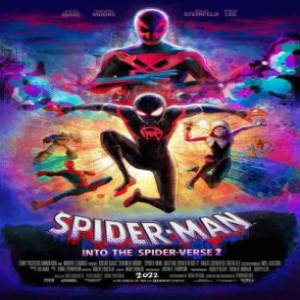
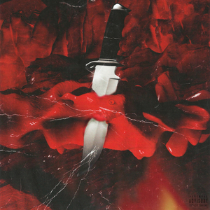

Metro Boomin, ou encore Young Metro, est un producteur et DJ que tous les grands noms de la scène hip-hop americaine s'arrachent pour l'avoir dans leurs projets musicaux.
Il a apporté sa touche dans le rap d'Atlanta, notamment avec ses prods pour Young Thug, Lil Baby ou encore Future
, que l'on entend dans un de ses deux producertag
"If Young Metro don't trust you, I'm gon' shot you."
Son vrai nom, Leland Taylor Wayne, Metro Boomin le 16 septembre 1993 à Saint-Louis, dans le Missouri. Il est principalement élevé par sa mère, qui sera la personne qui va lui faire aimer la musique à l'âge de 7 ans. Il recevra de sa mère le projet Country Grammar de Nelly, qui sera une révélation. C'est à ce moment-là qu'il décidera de faire de la musique un objectif dans sa vie.
En démarrant à produire des sons il rencontre Caveman qui va le mettre en relation avec OJ da Juiceman qui va participer à la légende du producteur. Le problème, c'est que Metro est à Saint-Louis et OJ à Atlanta. Metro va devoir s'y rendre avec sa mère et une fois sur place, OJ va demander à ce que le Metro soit là tous les week-ends. Donc sa mère va l'accompagner tous les week-ends à Atlanta en faisant plus de 8 heures de route. Cette période de sa vie va durer un certain temps. Il sera décisif en effet, en plus de se créer des relations à Atlanta et de produire pour des artistes en place et choisira là-bas son nom officiel. De Metro Beats il s'appellera désormais Metro Boomin. « Boomin » est un mot souvent employé par OJ au studio pour désigner quelque chose de stylé. « Metro » fait référence à la ligne de bus de sa ville natale, Saint-Louis. 2012 sera une année décisive mais également une période compliquée.
En allant chez Sony Digital il rencontrera des pionniers de la ville comme Gucci Mane ou encore Future. Ils sortiront ensemble leur première collaboration.
Désormais implanté dans la scène musicale, il va connaître son premier succès en 2013. Avec ce succès, il activera la 2e phase de son plan, devenir un producteur
et ne pas être seulement un beatmaker. En plus de participer à l'ascension de Future qui va rapidement atteindre son prime, Metro va commencer à sortir ses propres projets.
En faisant ça, il va se détacher de l'image du beatmaker qui habituellement reste dans l'ombre de l'artiste. Il va commencer à apparaître dans les clips des morceaux qu'il a produit,
il va chercher à s'élever en même temps que l'artiste avec qui il collabore comme Future, dont il produit certains de ses plus gros morceaux.
Metro Boomin devient alors une valeur sûre dans l'industrie musicale et va commencer à produire pour les plus grands. Entre 2014 et 2015, son nom résonne particulièrement à Atlanta.
Grâce à ça, il va être en contact avec Young Thug, alors en pleine ascension.
En pleine ascension, en plus de produire certains des plus gros morceaux de la mixtape de Travis Scott, il produira également dans son propre album,
lui aussi amené à devenir un classique. Cette année-là, il va produire de nombreux albums, notamment DS2 de Future ou encore le projet commun de Drake et Future,
What A Time To Be Alive. C'est également en 2015 qu’aparaîtra le tag de Metro Boomin qui deviendra légendaire, "If Young Metro don’t trust you I’m gon’ shoot you."
En 2016, la carrière de Metro Boomin va prendre une toute autre ampleur lorsqu'il va collaborer avec 21 Savage. Metro est celui qui va aider 21 Savage a trouvé sa propre patte en affinant le style de rap sombre qu'il proposait déjà. Bien qu'il ait sorti des projets avant Savage Mode, c'est cette dernière qui va le révéler au monde entier et faire de lui et Metro un duo incontournable.
Savage Mode pourrait être la soundtrack d'un film d'horreur. C’est de cette manière que va apparaître peu à peu l'aspect cinématographique dans la musique de Metro Boomin. Visuellement, ce sera également le cas lorsqu'il reprendront la scène du film Menace 2 Society dans un clip. Inarrêtable avec plusieurs projets communs, notamment le légendaire Without Warning avec 21 Savage et Offset. Sur Instagram, Metro Boumin va annoncer prendre sa retraite. Mais tout ça, c'était avant qu'il revienne avec son premier album solo Not All Heroes Wear Capes. Cette fois-ci, le producteur est le centre d'attention et dispose des artistes comme des instruments pour créer des morceaux intemporels. Chose que nous pouvons remarquer avec 21 Savage qui reprend le flow des Ying Yang Twins. L'autre influence que nous pouvons noter est Kanye West avec son album 808 and Heartbreak, avec Travis Scott sur Only One. Et comme si ça ne suffisait pas, ni trop, c'est assuré que tous les morceaux s'enchaînent parfaitement avec des transitions fluides.
2 ans après la sortie de NAHWC, il revient avec Savage Mode 2. D'habitude sortir une 2e partie d'un morceau ou d’un projet reconnu comme classique est souvent une mauvaise idée. Sauf que là, ça ne sera pas le cas. Depuis, les 2 artistes ont chacun évolué. Et pour fêter ce retour en duo, ils ramèneront Morgan Freeman sur le projet, dont la présence apporte une dimension totalement différente. En effet il donnera sa voix pour la narration du projet. Ils vont garder la même recette du premier projet en préservant ce côté sombre. Mais ne pouvant pas proposer la même chose qu'il y a 6 ans en arrière, le duo évolue musicalement mais aussi visuellement. Le meilleur exemple reste Running où le Grammy de 21 est ramené dans son quartier, montrant tout le chemin accompli.
Un drame va venir bouleverser sa vie. En une nuit, Metro va perdre la personne la plus importante de sa vie, celle qui lui a littéralement permis de devenir l'homme, mais aussi le producteur qui l'est maintenant. À cette même période, il avait commencé à teaser son nouveau projet et on aurait pu croire que ce drame allait le faire disparaître pendant plusieurs années, ce qui aurait été compréhensible, mais non, Metro boomin est un guerrier. Malgré tout, il viendra sauver l'année 2022 avec Heroes and Villains.
Metropolis est une métaphore de la scène Trap qui est en feu après l'arrestation de Young Thug et de Gunna, mais aussi le décès de Takeoff. Pourtant il va tenter de la sauver et réunir toute cette scène en plus du chanteur The Week-End sur le morceau Creepin il va sampler les Fugees, mais aussi Mario Winans. Cet album encore plus cinématographique que le précédent, montre que Metro est prêt à relever les plus grands défis autres que des albums musicaux. Le prochain sera celui de réaliser la bonne son du prochain film Spider-Man, lui qui attend les comics.

Aujourd'hui Metro Boomin est connu pour ses nombreuses collaborations avec des rappeurs, que ce soit sur la production de sons ou même la production totale de projets.
En effet, on pourrait dire qu'il est le protagoniste, le héros, de certains projets musicaux dont il a mis la main à la pâte.
Tout d'abord il se fait connaître en même temps que le rappeur 21 Savage avec lequel il sort un EP commun "Savage Mode" dont le deuxième volet sort en 2020.

Ensuite on peut citer ses projets solos, tels que:
Ou encore plusieurs projets en communs:
Des apparitions à retenir: